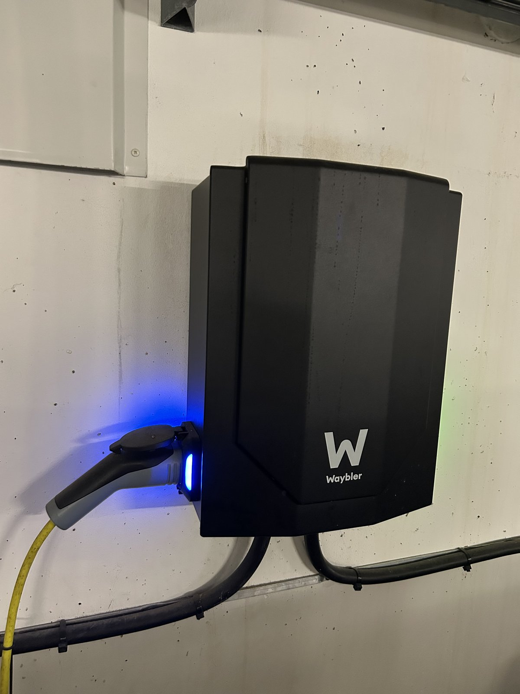

För dig med bil eller MC
Föreningen har 287 parkeringsplatser och 285 garageplatser, laddplatser för elbil, däckförvaring och egna garage för motorcykel och moped. Uthyrning, kö och uppsägning sköts av Fastighetsägarna – inte av styrelsen.
Parkering till självkostnad
En bilplats kostar 250 kronor i månaden och en garageplats 500 kronor, samma avgift för alla. Föreningen har 287 parkeringsplatser och 285 garage till 604 lägenheter, och priserna är satta för att täcka kostnaderna, inte för att gå med vinst.
Avgifter
Bilplats, garage och MC-garage debiteras på din avgiftsavi från Fastighetsägarna. Laddningen faktureras separat av Ladda Tillsammans.
| Typ av plats | Avgift | Att tänka på |
|---|---|---|
| Bilplats utomhus | 250 kr/mån | Tjänstebil debiteras dubbel avgift plus moms |
| Garageplats | 500 kr/mån | 6 000 kr per år, samma avgift för alla |
| Laddplats | 445 kr/mån | Utöver den ordinarie garageavgiften, faktureras av Ladda Tillsammans |
| Mobilapp för laddning | 69 kr/mån | Appen som styr laddningen, på samma faktura, plus elförbrukning |
| MC-garage | 150 kr/mån | Bokas via Fastighetsägarna |
| Mopedgarage | 0 kr | Ring fastighetsskötaren så uppdateras din nyckelbricka |
Så ser garagen ut
Garagelängorna är byggda som rader av små röda stugor med svarta sadeltak och vitspröjsade fönster, med parkeringsdäcket ovanpå. Samtliga garage renoverades mellan 2016 och 2019.
![Asfalterad infart som svänger fram till en mörk garageport med ett stort A på gaveln ovanför. Garagelängan är målad falurött med svarta sadeltak, vita knutar och små vitspröjsade fönster, som en rad sammanbyggda stugor. Ovanpå längan ligger ett parkeringsdäck bakom en ockrafärgad mur, med en bil synlig över kanten, och bakom det står ett ljust lamellhus med röda och gula fasadfält. Till höger står en skylt med texten Brf Sjötungan mellan två rödgula stolpar, och runt infarten finns gräs, lövträd och en berghäll.](assets/images/car/img_4041.jpg)
Elbilsladdning
Föreningen har tecknat avtal med Ladda Tillsammans, som installerat och administrerar laddboxarna i Garage B. Antalet laddplatser utökades från 8 till 34.
Priserna är inte satta för att generera vinst, utan för att täcka föreningens kostnader för laddboxen inklusive service och underhåll. Utöver garageavgiften och laddplatsavgiften betalar du för laddboxens elförbrukning samt en fast månadsavgift för appen. Laddningen faktureras av Ladda Tillsammans, inte på avgiftsavin från Fastighetsägarna.
{kind=link}

Däckförvaring
Du kan säsongsförvara däck utan kostnad, så sommar- och vinterdäcken inte behöver ta plats i lägenhetsförrådet mellan säsongerna. Navkapslar och däcksidor förvarar du själv. Var förvaringen finns och när den är öppen vår och höst står i anslaget i porten.
Bilfria gårdar
Det går inga gator inne i området. Gårdarna mellan husen är till för dem som bor här, och barn kan cykla och leka på dem utan genomfartstrafik. Att lasta i och ur vid porten går bra – men ingen kör förbi.
Moped och motorcykel
Föreningen har egna garage för motorcykel, och plats för moped finns att hyra genom fastighetsskötaren på 08–617 76 00. Utanför bostadsområdet står stolpar märkta ”Moped Gästplats” där mopeden kan låsas fast.
Precis som för bilar körs det inte inne i området – gårdarna är bilfria.